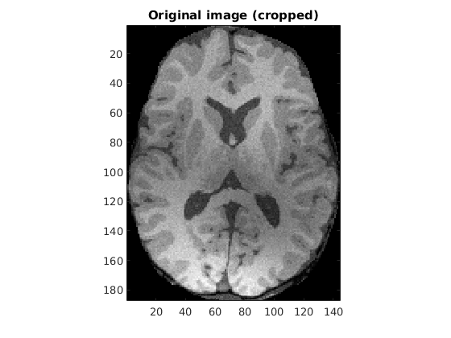

Contents
% load data close all; clear; clc; load('../data/assignmentSegmentBrain.mat'); [m, n] = size(imageData); image = imageData.*imageMask;
Crop
a=sum(imageMask); b=sum(imageMask,2); rowMin=find(b~=0,1,'first'); rowMax=find(b~=0,1,'last'); columnMin=find(a~=0,1,'first'); columnMax=find(a~=0,1,'last'); rect=[columnMin rowMin columnMax-columnMin rowMax-rowMin]; image=imcrop(imageData.*imageMask,rect); [m,n] = size(image);
FCM
Load params
K = 3; % Run KMeans as prior [~, C] = kmeans(image(:), 4); % Tunable parameters q = 1.68; mask = fspecial('gaussian'); U = ones(m, n, K)/K; classMeans = C(C>0.05); iters = 200; bias = 0.5*ones(m, n); U = ones(m, n, K)/K; for i=1:K, figure; imagesc(U(:,:,i)); colormap(gray); axis tight; daspect([1, 1, 1]); title(['Initial memberships for K=', num2str(i)]); end % Print initial class means fprintf('Initial class means\n'); disp(classMeans); fprintf('Value of q: %f\n', q);
Initial class means
0.6364
0.2533
0.4574
Value of q: 1.680000
Observations and descriptions
Choice of initial memberships
The value of initial memberships is taken to be uniform across all classes. This is because I don't know a-priori the appropriate memberships and it is statistically a safe measure to initialize uniformly since we have only 3 classes. Also, a better choice of 'q' and 'classMeans' suffice to run the algorithm with great efficiency.
Choice of class means
This was the place where I could make an intelligent initialization. I ran the normal k means on the image with 4 classes (considering the one for background too, so that I have a nearby estimate of the actual means). I discarded the first mean since it was for the background. In fact, running this algorithm assigns membership to the background along with some other class, which may be undesirable. Nevertheless, since it has been told to take K = 3, I have taken it.
Choice of mask
Obviously, the smoothness asssumption for bias only holds locally, and it has to be dependent on distance. Gaussian is a fair choice to make here.
Main algorithm
[U, classMeans, B, losses] = runModifiedFCM(image, K, q, mask, U, classMeans, bias, iters);
Normalised log loss : 0.160653 Normalised log loss : 0.158111 Normalised log loss : 0.157520 Normalised log loss : 0.157389 Normalised log loss : 0.157293 Normalised log loss : 0.157216 Normalised log loss : 0.157158 Normalised log loss : 0.157113 Normalised log loss : 0.157076 Normalised log loss : 0.157045 Normalised log loss : 0.157019 Normalised log loss : 0.156999 Normalised log loss : 0.156983 Normalised log loss : 0.156971 Normalised log loss : 0.156959 Normalised log loss : 0.156949 Normalised log loss : 0.156941 Normalised log loss : 0.156935 Normalised log loss : 0.156929 Normalised log loss : 0.156926 Normalised log loss : 0.156923 Normalised log loss : 0.156921 Normalised log loss : 0.156919 Normalised log loss : 0.156917 Normalised log loss : 0.156915 Normalised log loss : 0.156914 Normalised log loss : 0.156912 Normalised log loss : 0.156910 Normalised log loss : 0.156909 Normalised log loss : 0.156909 Normalised log loss : 0.156908 Normalised log loss : 0.156908 Normalised log loss : 0.156908 Normalised log loss : 0.156908 Normalised log loss : 0.156909 Normalised log loss : 0.156909 Normalised log loss : 0.156909 Normalised log loss : 0.156909 Normalised log loss : 0.156909 Normalised log loss : 0.156909 Normalised log loss : 0.156909 Normalised log loss : 0.156910 Normalised log loss : 0.156911 Normalised log loss : 0.156911 Normalised log loss : 0.156912 Normalised log loss : 0.156912 Normalised log loss : 0.156913 Normalised log loss : 0.156913 Normalised log loss : 0.156914 Normalised log loss : 0.156915 Normalised log loss : 0.156917 Normalised log loss : 0.156918 Normalised log loss : 0.156920 Normalised log loss : 0.156921 Normalised log loss : 0.156923 Normalised log loss : 0.156923 Normalised log loss : 0.156923 Normalised log loss : 0.156923 Normalised log loss : 0.156924 Normalised log loss : 0.156924 Normalised log loss : 0.156924 Normalised log loss : 0.156925 Normalised log loss : 0.156925 Normalised log loss : 0.156925 Normalised log loss : 0.156926 Normalised log loss : 0.156926 Normalised log loss : 0.156926 Normalised log loss : 0.156927 Normalised log loss : 0.156927 Normalised log loss : 0.156927 Normalised log loss : 0.156928 Normalised log loss : 0.156928 Normalised log loss : 0.156928 Normalised log loss : 0.156929 Normalised log loss : 0.156929 Normalised log loss : 0.156929 Normalised log loss : 0.156928 Normalised log loss : 0.156928 Normalised log loss : 0.156928 Normalised log loss : 0.156928 Normalised log loss : 0.156928 Normalised log loss : 0.156928 Normalised log loss : 0.156928 Normalised log loss : 0.156928 Normalised log loss : 0.156928 Normalised log loss : 0.156928 Normalised log loss : 0.156928 Normalised log loss : 0.156929 Normalised log loss : 0.156929 Normalised log loss : 0.156929 Normalised log loss : 0.156929 Normalised log loss : 0.156928 Normalised log loss : 0.156929 Normalised log loss : 0.156928 Normalised log loss : 0.156929 Normalised log loss : 0.156929 Normalised log loss : 0.156928 Normalised log loss : 0.156928 Normalised log loss : 0.156928 Normalised log loss : 0.156928 Normalised log loss : 0.156928 Normalised log loss : 0.156928 Normalised log loss : 0.156927 Normalised log loss : 0.156927 Normalised log loss : 0.156927 Normalised log loss : 0.156927 Normalised log loss : 0.156927 Normalised log loss : 0.156926 Normalised log loss : 0.156926 Normalised log loss : 0.156926 Normalised log loss : 0.156926 Normalised log loss : 0.156926 Normalised log loss : 0.156926 Normalised log loss : 0.156926 Normalised log loss : 0.156926 Normalised log loss : 0.156926 Normalised log loss : 0.156926 Normalised log loss : 0.156926 Normalised log loss : 0.156926 Normalised log loss : 0.156926 Normalised log loss : 0.156926 Normalised log loss : 0.156926 Normalised log loss : 0.156926 Normalised log loss : 0.156926 Normalised log loss : 0.156926 Normalised log loss : 0.156926 Normalised log loss : 0.156926 Normalised log loss : 0.156926 Normalised log loss : 0.156926 Normalised log loss : 0.156926 Normalised log loss : 0.156926 Normalised log loss : 0.156926 Normalised log loss : 0.156926 Normalised log loss : 0.156926 Normalised log loss : 0.156926 Normalised log loss : 0.156926 Normalised log loss : 0.156926 Normalised log loss : 0.156926 Normalised log loss : 0.156926 Normalised log loss : 0.156926 Normalised log loss : 0.156926 Normalised log loss : 0.156926 Normalised log loss : 0.156926 Normalised log loss : 0.156926 Normalised log loss : 0.156926 Normalised log loss : 0.156926 Normalised log loss : 0.156926 Normalised log loss : 0.156926 Normalised log loss : 0.156926 Normalised log loss : 0.156926 Normalised log loss : 0.156926 Normalised log loss : 0.156926 Normalised log loss : 0.156926 Normalised log loss : 0.156926 Normalised log loss : 0.156926 Normalised log loss : 0.156926 Normalised log loss : 0.156926 Normalised log loss : 0.156926 Normalised log loss : 0.156926 Normalised log loss : 0.156926 Normalised log loss : 0.156926 Normalised log loss : 0.156926 Normalised log loss : 0.156926 Normalised log loss : 0.156926 Normalised log loss : 0.156926 Normalised log loss : 0.156926 Normalised log loss : 0.156926 Normalised log loss : 0.156926 Normalised log loss : 0.156926 Normalised log loss : 0.156926 Normalised log loss : 0.156926 Normalised log loss : 0.156926 Normalised log loss : 0.156926 Normalised log loss : 0.156926 Normalised log loss : 0.156926 Normalised log loss : 0.156926 Normalised log loss : 0.156926 Normalised log loss : 0.156926 Normalised log loss : 0.156926 Normalised log loss : 0.156926 Normalised log loss : 0.156926 Normalised log loss : 0.156926 Normalised log loss : 0.156926 Normalised log loss : 0.156926 Normalised log loss : 0.156926 Normalised log loss : 0.156926 Normalised log loss : 0.156926 Normalised log loss : 0.156926 Normalised log loss : 0.156926 Normalised log loss : 0.156926 Normalised log loss : 0.156926 Normalised log loss : 0.156926 Normalised log loss : 0.156926 Normalised log loss : 0.156926 Normalised log loss : 0.156926 Normalised log loss : 0.156926 Normalised log loss : 0.156926 Normalised log loss : 0.156926 Normalised log loss : 0.156926 Normalised log loss : 0.156926
Post algo
Find residual and A
A = zeros(m, n); for i=1:K, A = A + U(:,:,i)*classMeans(i); end R = image - A.*B;
Plots
fprintf('Final class means\n'); disp(classMeans); % plot losses figure; plot((losses)); title('Normalized loss function'); % mask figure; imagesc(mask); colormap(gray); axis tight; daspect([1, 1, 1]); title('Weight mask'); % Original image figure; imagesc(image); colormap(gray); axis tight; daspect([1, 1, 1]); title('Original image (cropped)'); % Bias removed image figure; imagesc(B); colormap(gray); axis tight; daspect([1, 1, 1]); title('Bias-removed image'); % Bias image figure; imagesc(A); colormap(gray); axis tight; daspect([1, 1, 1]); title('Bias-field image estimate'); % Residual image figure; imagesc(R); colormap(gray); axis tight; daspect([1, 1, 1]); title('Residual image'); % Memberships for i=1:K, figure; imagesc(U(:,:,i)); colormap(gray); axis tight; daspect([1, 1, 1]); title(['Final memberships for K=', num2str(i)]); end % Segmentation figure; imagesc(U); axis tight; daspect([1, 1, 1]); title('Segmentation map');
Final class means
0.9112
0.1161
0.6820
